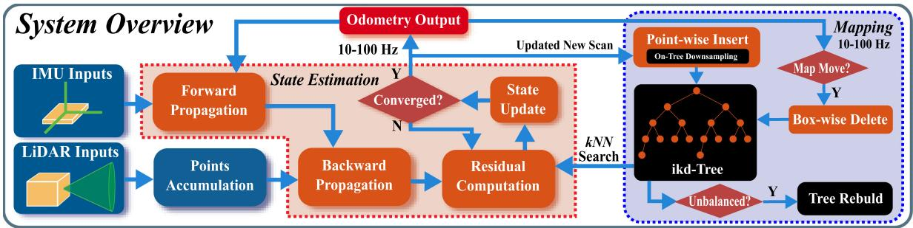

「We term this raw points based registration as a direct method in analogy to visual SLAM.」（我们把这种基于原始点的配准称为直接法，这个叫法是类比视觉 SLAM 而来的。）
那么原文凭什么认为「提特征」是个坏主意？它给了三条理由，每一条都是原文明写的：
① 它对环境太敏感
原文说特征提取的性能「easily influenced by the environment」（容易被环境左右）：在没有大平面、没有长棱线的无结构环境里，它根本挑不出几个点来。原文原话是「the feature extraction will lead to few feature points」。
② 小视场会把问题放大
原文紧接着补了一句：「This situation is considerably worsened if the LiDAR field of view (FoV) is small, a typical phenomenon of emerging solid-state LiDARs.」——视场越小，这个问题越严重，而小视场正是新兴固态激光雷达的典型特征。这一句直接呼应第一季 0007 课讲过的固态雷达话题。
③ 它把你绑死在一种雷达上
原文说特征提取「varies from LiDAR to LiDAR, depending on the scanning pattern (e.g., spinning, prism based, and MEMS based) and point density」——换个扫描方式的雷达，提特征的规则就得重写。原文的结论很直白：这会让采用一套 LIO 方法「requires much hand-engineering work」（需要大量手工调参的工程工作）。
而删掉它换来了什么？原文摘要里的说法是：直接配准「enables the exploitation of subtle features in the environment and, hence, increases the accuracy」（使得环境中细微的几何结构也能被利用，从而提升精度），并且「makes it naturally adaptable to emerging LiDARs of different scanning patterns」（天然适配各种扫描方式的新兴激光雷达）。
精度上的证据：在大部分序列上，带特征提取的 FAST-LIO 变体和直接法表现差不多——除了 lili_7 这一个序列。原文的解释是，这个序列「contains many trees and large open areas that feature extraction will remove many effective points from trees and faraway buildings」（包含大量树木和大片开阔区域，特征提取会把树和远处建筑物上的许多有效点删掉）。
成败上的证据：在港大校园那个 650 米、100 Hz 的手持序列上，另一个也支持固态雷达的系统 LILI-OM 直接失败了。原文给的原因是：「its feature extraction module produces too few features at the 100 Hz scan rate」——在 100 Hz 的扫描率下，它的特征提取模块产出太少的特征。

原图注（Fig. 1）：System overview of FAST-LIO2. The overall system consists of a state estimation module, which estimates the full LiDAR state by registering raw points in a scan to the map points via a tightly coupled iterated Kalman filter, and a mapping module, which incrementally adds the new points in each scan to a k-d tree structure (i.e., ikd-Tree) and rebalances the tree when necessary.
（中译：FAST-LIO2 的系统总览。整个系统由一个状态估计模块和一个建图模块组成：状态估计模块通过紧耦合的迭代卡尔曼滤波，把一帧中的原始点配准到地图点上，从而估计完整的激光雷达状态；建图模块把每帧中的新点增量地加入一棵 k-d 树结构（即 ikd-Tree），并在必要时重新平衡该树。） 怎么看这张图：① 找一个关键词——上半部分写的是「registering raw points」，也就是「配准原始点」，整张图里再也找不到 feature extraction 这个模块了；② 看下半部分的建图模块，它写的是「incrementally adds … and rebalances…」——增量加入、必要时再平衡，这正是本节后半程要逐条拆开的 ikd-Tree；③ 把这张图和上一节 FAST-LIO 的 Fig. 2 并排放，差别一眼可见：上一节那根管子里有一个提特征的盒子，这一节没了。 要记住的一句话：本节的两条贡献在这张图上各自占一半——上半「不再提特征」，下半「ikd-Tree 增量地图」。
这张图在画什么：同一帧点云画了两次。左边是 LOAM 式的做法：用红圈圈出少量角点、用蓝线连出少量平面点，其余点全部涂灰，表示被丢弃；右边是 FAST-LIO2 的做法：所有点都保留、都参与配准，并且在一个「放大镜」里画出它到底怎么用一个点——找到它的 5 个邻近地图点，拟出一块小平面，然后量这个点到平面的垂直距离。 怎么看这张图：① 先对比两边的点数和颜色：左边一片灰，右边一片彩，灰色的那些就是被筛掉的信息；② 再看右边放大镜里的三样东西：绿色小点（5 个邻居）、蓝色斜四边形（由这 5 个点拟合出的小平面）、红色虚线（这个点到平面的距离，也就是残差）；③ 最后一件事最关键：右边之所以敢全用，不是因为它算得更快，而是因为它有一个能扛住海量点查询的数据结构——那就是下一节要讲的 ikd-Tree。 要记住的一句话：左边为了「挑得准」，丢掉了大部分；右边全都用，但靠一个数据结构保证还算得动。
「The difference between these two methods is that FAST-LIO is a feature-based method, and it retrieves map points in the current FoV to build a new static k-d tree for kNN search at every step.」
（中译：这两种方法的差别在于，FAST-LIO 是基于特征的方法，它在每一步都从当前视场里的地图点重建一棵新的静态 k-d 树，用于 kNN 搜索。）
「at every step」（每一步）——这就是全部问题的根源。这个开销在原文的表 VII 里被量化了：FAST-LIO 的建图环节平均每帧要 13.81 毫秒，而 FAST-LIO2 只需要 0.13 毫秒。差了大约一百倍。
「Different from many existing implementations of k-d trees, which store a bucket of points only on leaf nodes, our ikd-Tree stores points on both leaf nodes and internal nodes to better support dynamic point insertion and tree rebalancing.」
（中译：与许多现有 k-d 树实现「只在叶节点上存一桶点」不同，我们的 ikd-Tree 把点同时存在叶节点和内部节点上，以更好地支持动态点插入与树再平衡。）
对 nanoflann：「the insertion time is often slightly shorter than the ikd-Tree and R*-tree, but huge peaks occasionally occur due to its logarithmic structure of organizing a series of k-d trees. Such peaks severely degrade the real-time ability, especially when maintaining a large map.」（它的插入时间往往略短，但会偶发巨大的尖峰；这类尖峰会严重破坏实时性，尤其是在地图很大时。）
对 R*-tree：「achieves a similar insertion time with ikd-Tree but with a significantly higher search time for large tree sizes.」（插入时间和 ikd-Tree 差不多，但在树规模很大时查询时间明显更高。）
而对 octree：「achieves the best performance in point insertion … but its inquiry time is much higher due to the unbalanced tree structure.」（插入最快，但查询慢得多，因为树结构不平衡。）
原图注（Fig. 5）：Data structure comparison over different tree size. The upper figure shows the average processing time of searching five nearest neighbors. The bottom figure shows the average processing time of inserting one point to the data structure.
（中译：不同树规模下的数据结构对比。上图是搜索五个最近邻的平均处理时间；下图是向数据结构中插入一个点的平均处理时间。） 怎么看这张图：① 横轴是树的规模（点数），纵轴是单次操作耗时，越低越好；② 重点盯 nanoflann（nano flann k-d 树）那条曲线——它不只是位置高，而是会冒出孤立的尖峰，那几次尖峰就是实时性的杀手；③ 再看 ikd-Tree 的曲线走势：原文的结论是它「is indeed proportional to $\log n$」，也就是随规模缓慢增长，而不是爆炸。 要记住的一句话：这张图比较的不只是「谁平均更快」，更重要的是「谁不会突然卡一下」——对实时系统来说，稳定性比平均值更值钱。
ikd-Tree 的办法叫懒惰删除：删的时候不真删，只贴个「待删」的标记；真正从内存里抹掉，推迟到后面重建的时候再一起做。原文的描述是：「When points are removed from the map, the nodes are not deleted from the tree immediately, but only setting the boolean variable deleted to be true.」
包围盒和目标盒子完全没有重叠 → 直接返回，什么都不用做。原文：「the recursion returns directly without updating the tree」。
情况二：完全包含
整个子树都被包在目标盒子里 → 整棵子树打一个标记就够了：deleted 和 treedeleted 都置为 true，同时把 invalidnum 直接设成 treesize（因为全无效了）。原文：「As all points on the (sub-)tree are deleted, the attribute invalidnum is equal to the treesize.」
原图注（Fig. 3）：2-D demonstration of map region management. (a) Blue rectangle is the initial map region with length L. The red circle is the initial detection area centered at the initial LiDAR position p0. (b) Detection area (dashed red circle) moves to a new position p (circle with solid red line) where the map boundaries are touched. The map region is moved to a new position.
（中译：地图区域管理的二维示意。(a) 蓝色矩形是长度为 L 的初始地图区域，红圈是以初始激光雷达位置 p0 为中心的初始检测区域。(b) 检测区域（红虚线圆）移动到新位置 p（红实线圆），此时地图边界被触及；地图区域随之移动到新的位置。） 怎么看这张图：① 蓝框是地图（边长 $L$），红圈是检测范围——只有落在检测范围内的地图点才会被拿去配准；② 看 (b)：红圈一路往右走，碰到蓝框边界的那一刻，蓝框整体往前跳一格；③ 跳走之后，左边露出来的那一块旧区域就彻底没用了——这正需要「整块删除」，也正是上一节那种「包围盒对包围盒」的懒惰删除机制存在的理由。 要记住的一句话：地图不是「无限长、只增不减」的，它是一块跟着车走的有限窗口；窗口一移动，就必须有廉价的大块删除手段。
这条判据管的是树高。原文顺便给了一个漂亮的结论：「It can be easily proved that the maximum height of an $\alpha$-balanced tree is $\log_{1/\alpha_{\text{bal}}}(n)$.」——$\alpha$ 平衡树的最大高度是 $\log_{1/\alpha_{\text{bal}}}(n)$。对比一下：完全静态的平衡 k-d 树高度是 $\log_2 n$。因为 $\alpha_{\text{bal}}$ 大于 0.5，所以 $\log_{1/\alpha_{\text{bal}}}$ 的底数小于 2，树会略高一点点——这就是「允许动态增删」要付的代价：树稍微高一点，但换来了不用重建整棵树。
第二条：删除判据（$\alpha$-deleted）。同样以 $T$ 为根：
$$I(T) < \alpha_{\text{del}}\, S(T)$$
其中 $\alpha_{\text{del}} \in (0,1)$，$I(T)$ 就是 invalidnum（这棵子树里被标记删除的节点数）。说人话：垃圾不能占太多地方。一旦无效节点的占比超过 $\alpha_{\text{del}}$，就必须重建，把这些「僵尸节点」真正清出去。原文对此的解释是：「the $\alpha$-deleted criterion ensures invalid nodes … are removed to reduce tree size」（删除判据保证无效节点被清掉，从而减小树的规模）。
原文的解法是把它挪到第二条线程去做：「When rebuilding a large subtree on the ikd-Tree, a considerable delay could occur and undermine the real-time performance of FAST-LIO2. To preserve high real-time ability, we design a double-thread rebuilding method.」——重建大子树可能造成可观的延迟、破坏实时性，所以设计了双线程重建。
重放完毕后，新树和旧树在点的内容上完全一致，只是新树的结构更平衡。这时才短暂地 LockAll——原文说这个动作「finishes very quickly (i.e., only one instruction)」，很快——把 $\mathcal{T}'$ 替换上去，并释放旧树的内存。
原文对整个机制的效果给了两句总结：
「This design ensures that during the rebuilding process in the second thread, the mapping process in the main thread proceeds still at the odometry rate without any interruption, albeit at a lower efficiency due to the temporarily unbalanced k-d tree structure.」
（中译：这一设计确保第二线程重建期间，主线程的建图过程仍然以里程计的频率继续推进、不被打断——尽管由于树结构暂时不平衡，效率会低一些。）
测量噪声协方差被设成了常数。原文说：「In practice, we set $\mathbf{R}_j$ to a constant value and found that it works very well.」——实践中把 $\mathbf{R}_j$ 设成一个常数，效果就很好。这是个很实用的「工程上够用就行」的取舍。
原图注（Fig. 2）：Measurement model. A LiDAR point is assumed to lie on a small plane formed by its nearby map points. ${}^{G}\mathbf{u}_j$ is the normal vector of the plane and ${}^{G}\mathbf{q}_j$ is a point lying on the plane.
（中译：测量模型。一个激光点被假定为落在由其邻近地图点构成的小平面上。${}^{G}\mathbf{u}_j$ 是该平面的法向量，${}^{G}\mathbf{q}_j$ 是位于该平面上的一点。） 怎么看这张图：① 先找那个「被扰动了的点」——图上画的是一个真实点加噪声之后的实际测量位置；② 再看它「应该在哪里」——由邻近地图点拟出来的那块小平面；③ 最后看 ${}^{G}\mathbf{u}_j$（法向）和 ${}^{G}\mathbf{q}_j$（平面上一点）这两个量：它们俩就完全定义了这个平面，而残差就是「被扰动点」到该平面的垂直距离。 要记住的一句话：这个模型和上一节 FAST-LIO 的点到面观测是同一族东西，唯一的区别是：上一节的「面」来自提前挑好的平面特征点，这一节的「面」来自现场找的 5 个邻居。
13.81 ms → 0.13 ms。这正是 ikd-Tree 换掉「每步重建静态树」带来的。原文对此的评语是：FAST-LIO 的建图平均每帧超过 10 毫秒，「hence cannot be processed in real-time for this large scene」——在这种大场景下无法实时处理。
ARM 平台上合计 5.23 ms。原文的说法是：FAST-LIO2「can also achieve 10 Hz real-time performance that has not been demonstrated on an ARM-based platform by any prior work」——此前没有任何工作在 ARM 平台上展示过这样的 10 Hz 实时性能。
数据集基准：在 19 个序列上做对比，原文的结论是综合精度更高而算力更低——「8× faster than LILI-OM, 10× faster than LIO-SAM, and 6× faster than LINS」（比 LILI-OM 快 8 倍、比 LIO-SAM 快 10 倍、比 LINS 快 6 倍）。
这些激进运动之所以扛得住，原文自己给了两条原因：「first, the direct raw point registration uses more LiDAR measurements in high frame rate and aggressive motion compared to the feature based methods; second, the timely updated (at the frame rate) map allows each new scan to be registered to map points of the most recent scans, which share large FoVs with the new scan.」——一是直接法在高帧率和激进运动下用到了更多测量；二是地图以帧率被及时更新，所以每帧新扫描总能配到「刚刚那一帧」的地图点上，两者视场重合度高。第二条尤其值得玩味：地图更新得越快，配准就越稳——这正是 ikd-Tree 的功劳在起作用。
9.3 原文承认的局限：完全退化环境会失败
这一条必须原原本本讲，因为它是原文在讨论部分主动写下来的：
「FAST-LIO2 cannot work in completely degenerated environments where no geometrical structures exists in the LiDAR FoV (hence, no or very few LiDAR points). Examples include facing the LiDAR to open sea, sky, ground, single large wall, or in close proximity to objects (e.g., within 1 m) causing no points measurements. In these scenarios, FAST-LIO2 can be augmented by other sensors such as GPS and cameras.」
（中译：FAST-LIO2 无法在完全退化的环境中工作——也就是激光视场内不存在任何几何结构的环境（因此没有点、或只有极少的点）。例子包括：把激光雷达正对开阔海面、天空、地面、单一的整面墙，或者过于靠近物体（例如 1 米以内）以至于测不到点。在这些场景中，FAST-LIO2 可以借助 GPS、相机等其他传感器来补充。）